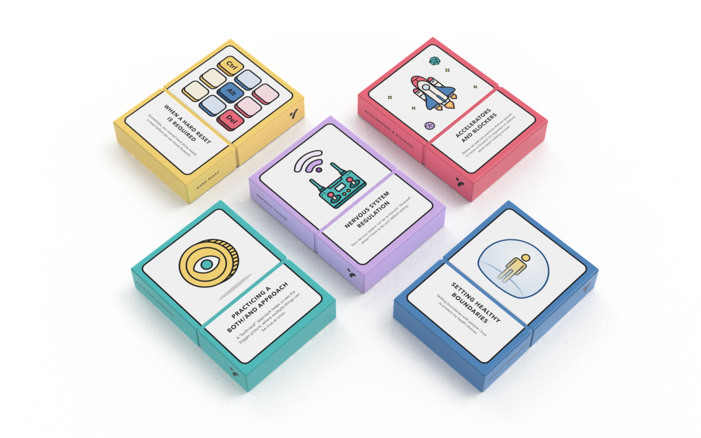
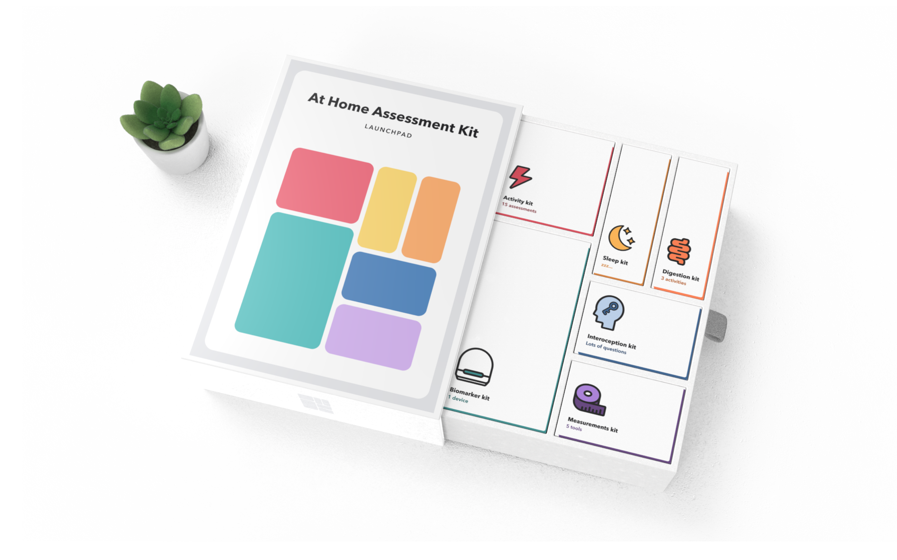
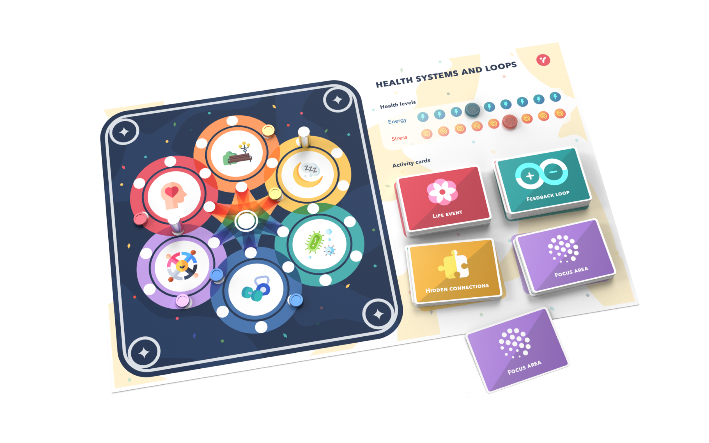
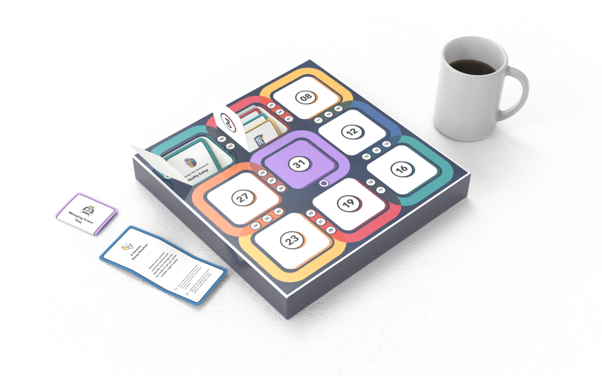
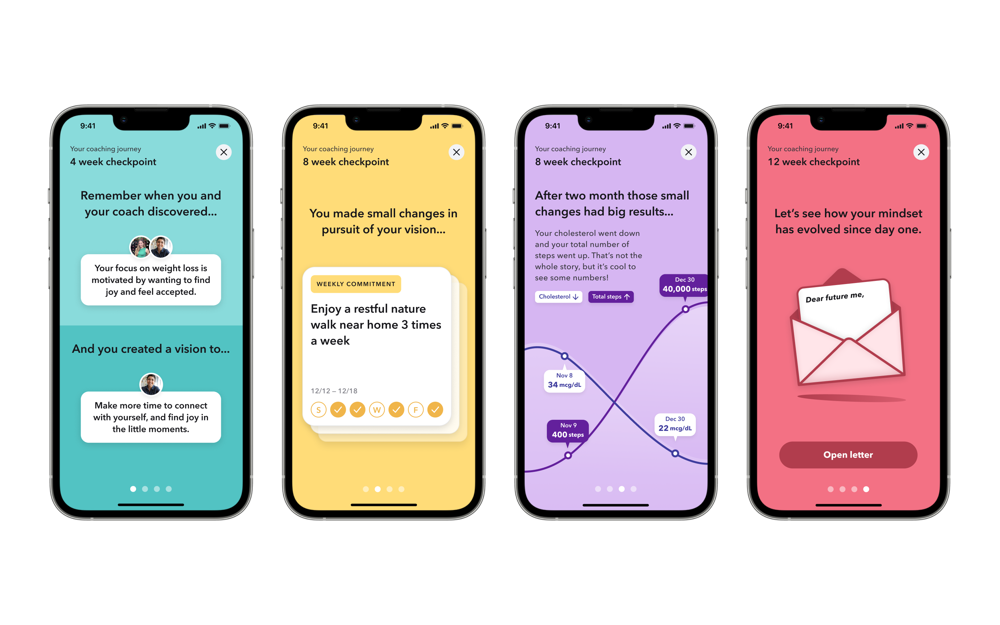
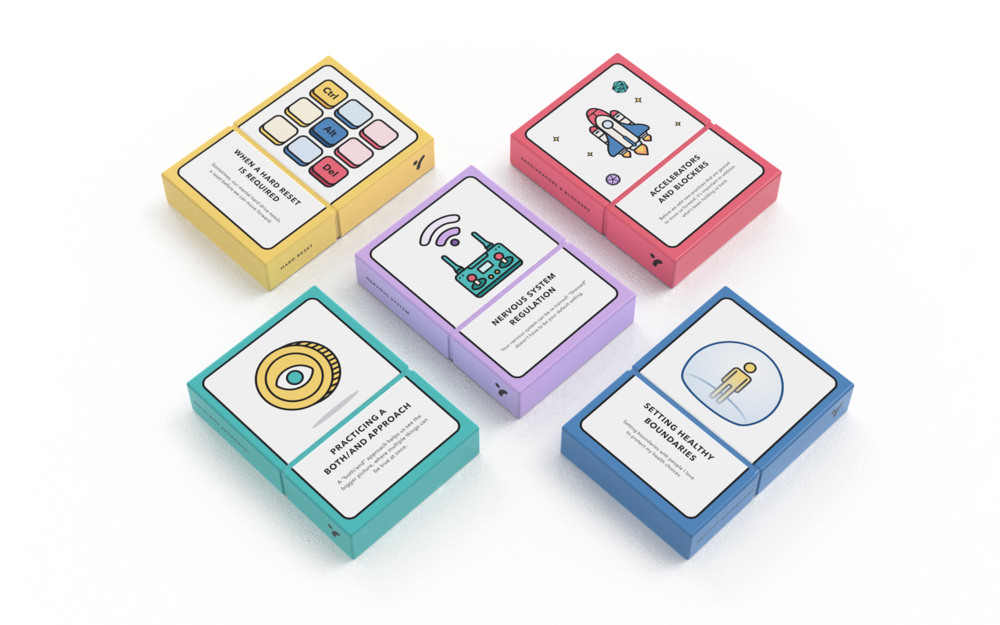
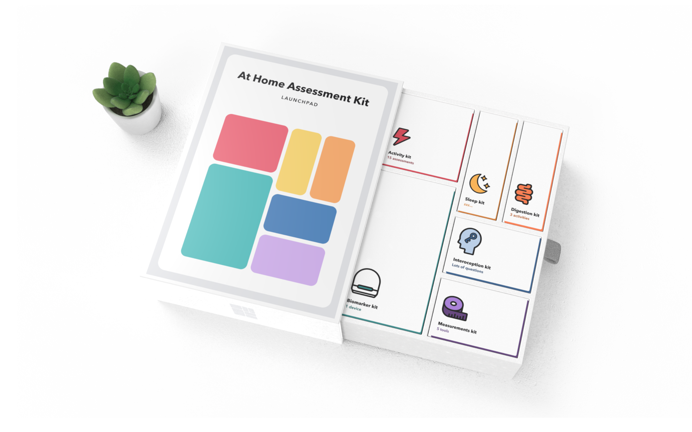
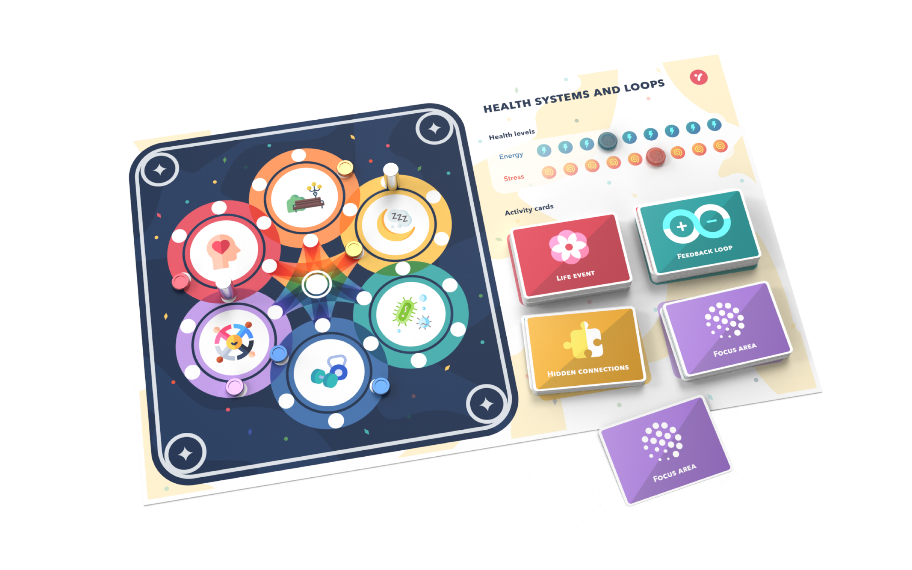
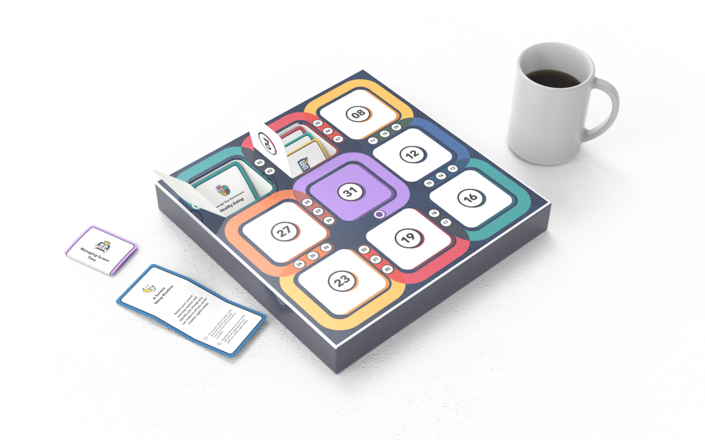
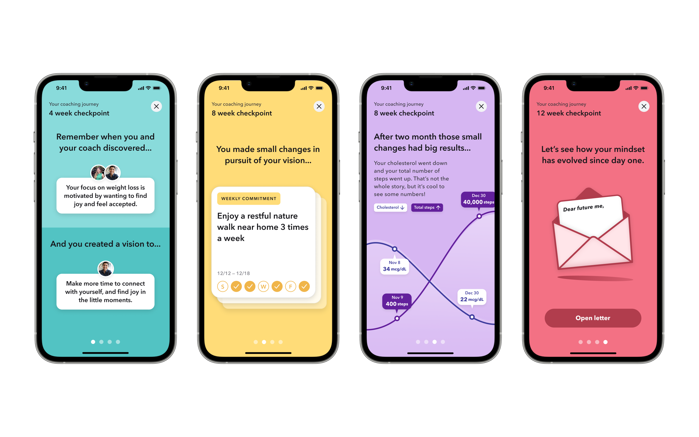

Background
After my experience at Macro, I sought to work at a company with a
consumer-facing product where I could collaborate in cross-functional
teams. My main priorities were to learn and work alongside other
designers while working towards a mission that I can get behind.
This led me to join Seven.me—a
health-focused startup building a system of products and services that make health
mastery accessible to all through behavioral health coaching. As their third designer,
I was given the opportunity to lead design projects from start to finish, owning
the discovery, ideation, and delivery, in collaboration with cross-functional
stakeholders (Product, Research, Copywriting, and Engineering).
Reflection Activities
My main assignment was to own the end-to-end experience of what we considered to be lifestyle prescriptions. These are in-app activities that our behavioral health coaches prescribe to the clients as a way to develop the right mindset to sustain healthy habits.

I was responsible for building this experience from scratch as I created a brief
to get everyone on the same page and led a brainstorming session with cross-functional
team members to generate diverging concepts. From here, I synthesized the values
and created a framework that should be consistent among all activities.
This enabled us to divide the experience into three stages and identify how we
can deliver value in different stages. I established foundational value pillars
that act as the DNA of all reflection activities in order to design a cohesive
set of activities.

Wheel of Life
Among these reflection activities, Wheel of Life was a key component of Seven’s coaching—a tool for clients to assess different aspects of their life to identify a focus area to improve on. This activity was initially done on paper, so we translated this into a digital experience that clients can complete inside the app.

The product development process started with Product, Behavioral Health, and Design
identifying the client and coach needs. Based on these discoveries, I explored different
directions and pieced together elements that best aligned with our research findings.
This process led to us narrow down the user experience into two potential paths.
One was focused on practicality, and the other was an experimentation on dynamic
interactions. We developed a research plan to conduct A/B testing for these two flows
so we can validate the hypotheses we formed. 20 participants went through this study
and we learned that there were different aspects of the two flows that resonated with people.

The final design aims to guide clients through each area of life by zooming in and
out of the wheel. This was done by starting with an overview of the wheel and allowing
clients to tap into each area to set their score.
Many users neglected the description of each area, so I chose to have the score
card fill up half of the screen upon appearance to present one item at a time.
By doing so, the half-view afforded browsing different areas while the full-view
enabled scoring.
As our product and brand was at a very early stage, our goal was to build an
experience that delivers the essential values. Thus it was important that these
14 different activities follow a similar UI pattern that prioritize scalability.
For activities that require a response from the clients, we encouraged clients to
speak out loud so they can internalize the positives. Hearing yourself talk is
known to be good practice in coaching/therapy sessions, and our clients
expressed that they appreciated this detail.
UX/UI Improvements
On the side, I continuously made UX/UI improvements to the Client app since the existing implementation was essentially a wireframe. This includes the registration flow, scheduling coaching sessions, and the Account page. To maximize design and engineering efficiency, I developed a short-term design system by creating reusable components in a monochromatic color scheme that is flexible for future brand development.


Graphic Design
In addition to product design work, I spend time on graphic design work including the pitch deck, service visualizations, product concepts, marketing materials, and internal materials.
Launchpad
Launchpad was a starter kit that gets delivered to our clients in the beginning of the coaching program to help them establish the right mindset before starting their journey. I was responsible for visualizing various concepts for prototyping purposes.
 









Internal Booklet
Here is an internal booklet I made to visually tell the client stories from our pilot program. Since this was made for internal use only, I was given full creative freedom for the art direction and execution.
Website